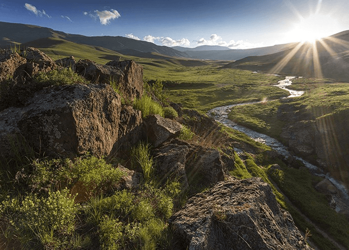
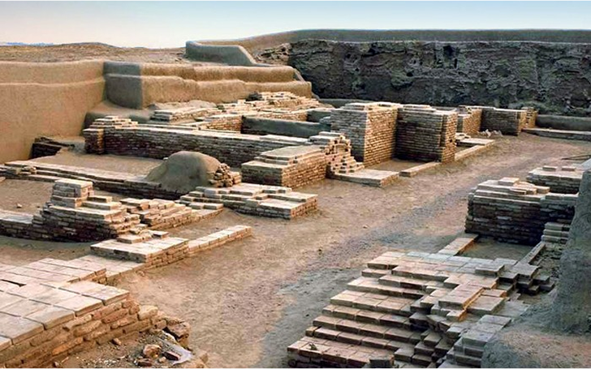

Сооружение мавзолея имеет нестандартную внешнюю конструкцию: башни-минареты, откуда традиционно звучит азан, схожи с наблюдательными башнями, а самой яркой чертой является так называемый “портал” - широкая арка, в которой исламская культура переплелась с мотивами европейской и русской архитектуры. Здесь есть усыпальница и поминальная мечеть. Важное достоинство мавзолея Арыстан-Баба и шедевр средневекового каллиграфического искусства — старинный рукописный Коран.
Красоту духовных мест невозможно передать словами — их важно увидеть и почувствовать эту мощнейшую энергетику. Мавзолей Арыстан-Баба несомненно оставит в памяти каждого самые теплые воспоминания, подарив внутреннее спокойствие и массу приятных эмоций.
В 2010 году в день Независимости открыто трехэтажное здание историко-культурно-этнографического центра площадью 4 600 квадратных метров. В центре находится 8 экспозиционных залов, конференц-зал, мастерские ремесленников, помещения для исследовательской работы историков.
Здание историко-культурно-этнографического центра расположено вблизи к мавзолею Ходжи Ахмеда Ясави. Здание построено по проекту архитектора Габита Садырбаева. Разработкой концепции и созданием экспозиции музея занималась авторская группа под руководством профессора Аманжола Найманбаева.
Каратауский заповедник - это новейший государственный резерват площадью 34300 га, расположенный в Центральной части хребта Каратау, который является одной из ветвей северо-западного Тянь-Шаня. В местных горах можно увидеть множество водопадов, в том числе и колоритные каскады. Многие географы, ботаники, экологи и другие научные исследователи природы отмечают своеобразность Каратауского заповедника из-за уникального растительного покрова. Местность территории Каратау потерпела значительные изменения в животном мире, однако здесь все еще встречаются редкие виды насекомых, птиц и животных, а также некоторые представители фауны, занесенные в Красную книгу Казахстана.
Люди должны хранить и заботиться о природе. Именно для этого создан Каратауский государственный природный заповедник, где каждый человек может побыть в гармонии с природой и с самим собой, понять важность сохранения бесценных территорий, не загрязненных и не погубленных деятельностью людей.
Отрарский оазис – жемчужина археологии Республики Казахстан. Продолжение археологических исследований, консервационных мероприятий, развитие туристической инфраструктуры – важнейшие составляющие процесса по включению памятников оазиса в список Всемирного культурного наследия.
Протяженность оазиса составляет с севера на юг около 53 километров, с запада на восток около 54 километров На территории оазиса насчитывается свыше 130 памятников.
Знаменитый мавзолей назван в честь выдающегося мусульманского деятеля и поэта Ходжи Ахмеда Ясави. Это священное место традиционно считается Малой Меккой. Мавзолей высотой 39 метров внесен в список Всемирного наследия ЮНЕСКО. Здесь находятся 35 помещений, что соединяются друг с другом различными ходами и коридорами; библиотека древних книг, подземная мечеть, баня, а также зал для ритуала благословения новорожденных. В центральной комнате под названием “Казандык” стоит древняя святыня "Тай-Казан"
Мавзолей Ходжи Ахмеда Ясави способен передать все духовные знания, которые он впитал за несколько веков существования, познакомить с историей и культурой Казахстана и всей Средней Азии. Он совмещает в себе не только величие архитектурной мысли, но и величие души - скромность. Каждый человек, дорога которого привела в Туркестан, должен посетить это удивительное место, окутанное множеством тайн и загадок, прикоснуться к символу тюркской народной мудрости и обязательно приехать сюда вновь.
+996 (509) 04-23-45
shipasu@mail.kz
Туркестанская область, город Туркестан
157 квартал, здание №037
Мы с радостью ответим на все ваши вопросы и поможем в выборе.